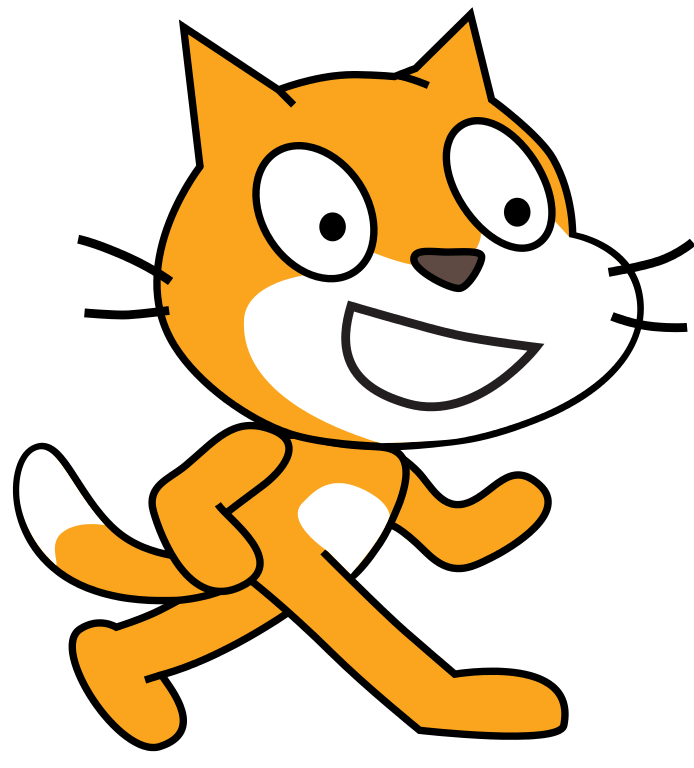
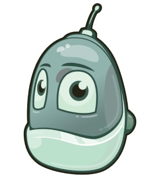

Скретч — визуальная событийно-ориентированная среда программирования, созданная для детей и подростков. Название произошло от слова scratching — техники, используемой хип-хоп-диджеями, которые крутят виниловые пластинки вперед-назад руками для того, чтобы смешивать музыкальные темы.
Scratch Kodu Game Lab (Лаборатория игр Коду) - это визуальный конструктор, позволяющий создавать трёхмерные игры для персональных компьютеров и игровых приставок ХВох без знания языка программирования и элементов компьютерного дизайна.
 Codu Game Lab